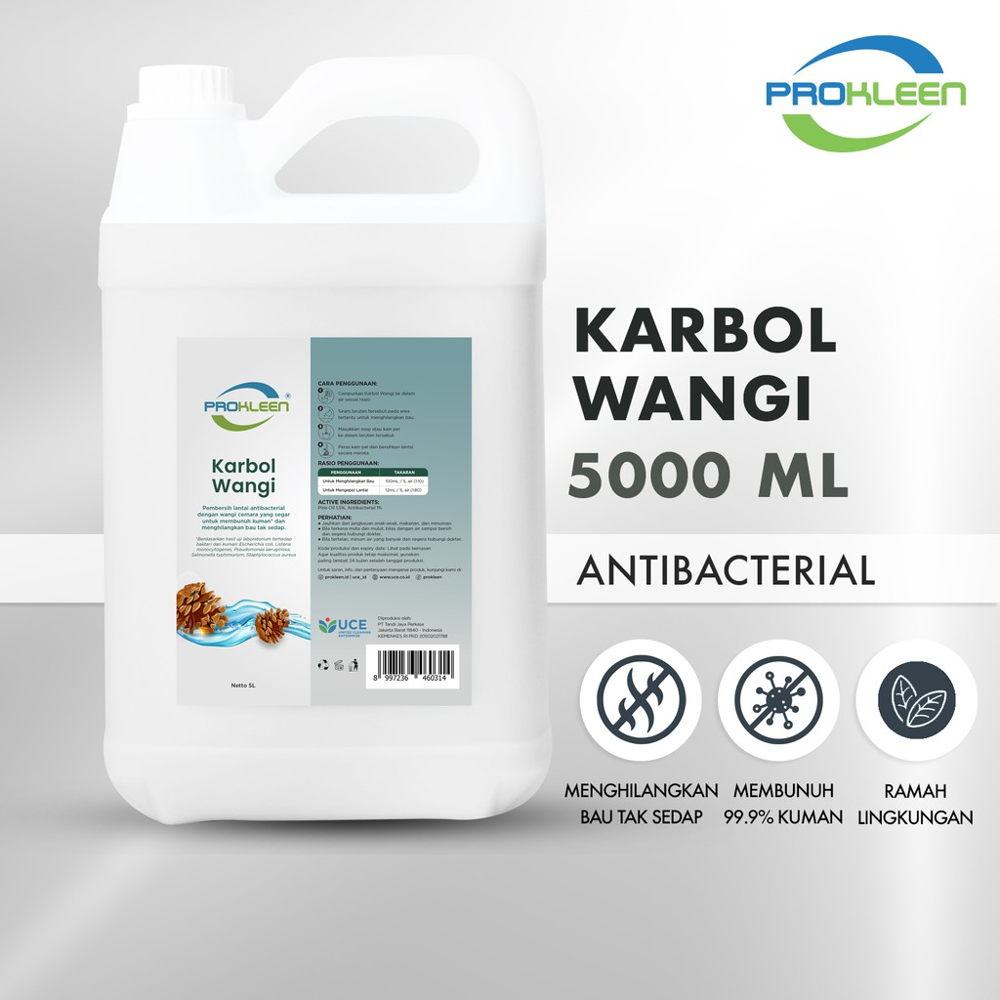
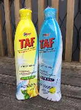
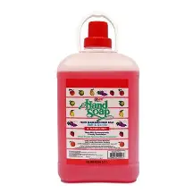
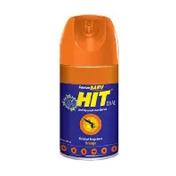

🧪 Daftar Chemical Cleaning Service
Jenis chemical yang umum digunakan dalam pekerjaan Cleaning Service.
| No | Contoh Gambar | Nama Chemical | Fungsi | Area Penggunaan | Takaran Pemakaian |
|---|---|---|---|---|---|
| 1 |

|
Glass Cleaner | Membersihkan kaca dan dapat dipakai untuk chemical dusting meja kerja (multifungsi). | Kaca, jendela, cermin, dan meja kerja. |
Campuran 1:1.
Catatan : Untuk pengelapan meja jangan langsung disemprot ke meja, tapi semprot dulu ke kain Microfiber yang digunakan untuk mendusting. |
| 2 |

|
Floor Cleaner | Membersihkan kotoran pada permukaan lantai. | Lantai | 1 liter air : 2 tutup botol glass cleaner (kira-kira saja) |
| 3 |
 |
Karbol | Untuk menghilangkan bau tidak sedap, khusus untuk ruang toilet sekaligus membunuh bakteri dan menimbulkan aroma wangi | toilet | kira kira saja |
| 4 |
 |
Taf | Membersihkan kloset, washtafel , dan bahan stainless steel | toilet. | murni |
| 5 |
 |
Handsoap | sabun cuci tangan untuk mebersihkan kuman ditangan. | murni. | |
| 6 |

|
Lemon Pledge (lemon plet) | Membersihkan dan mengkilapkan permukaan berbahan kayu, vinyl, dan kulit | murni (dalam kemasan kaleng) | |
| 7 |

|
Sabun Cuci Piring | Mencuci peralatan makanan | Kira kira saja | |
| 8 |

|
Detergent | Bubuk untuk mencuci peralatan kerja seperti lap kotak, kain Microfiber, poodle mop, dwilap, dll. | kira kira saja | |
| 9 |
 |
Hit | Membunuh serangga. | Semprot seperlunya | |
| 10 |

|
Pengharum Ruangan | Memberikan aroma pada ruangan. | Ruangan dan area yang diinginkan. | Semprot secukupnya. |